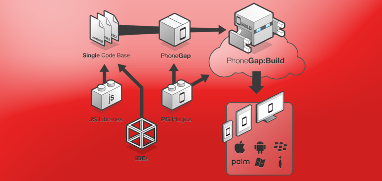

Hoy en día todo está girando en el desarrollo hacia los sistemas móviles. Un porcentaje alto de la población dispone ya de móviles inteligentes con acceso a internet. Al igual que el aumento de ese porcentaje, aumenta también el número de herramientas para el desarrollo de aplicaciones para móviles.
Un ejemplo de herramienta es PhoneGap, un framework para el desarrollo de aplicaciones móviles que utiliza las últimas tecnologías web disponibles. El resultado son aplicaciones híbridas que no dan el resultado óptimo de las nativas, pero que ofrecen un gran rendimiento.
Conozcamos unas cuantas razones para utilizar este framework en vuestros futuros proyectos.